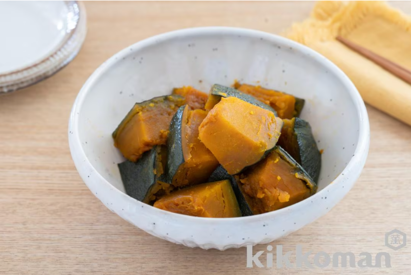

かぼちゃの煮物(基本のおかずつゆ使用)

材料（2人分）
かぼちゃ ... 1/4個（３００ｇ）
水 ... １８０ｍｌ
キッコーマン基本のおかずつゆ
... 大さじ2
作り方（調理時間:20分/目安）
かぼちゃは種とわたを取り、小さめのひと口大に切る。
小さめの鍋に（Ａ）を入れ、（１）の皮を下にして並べ、落しぶたをして火にかけ、沸騰したら弱火にして１５分程、煮汁が少なくなるまで煮る。
引用元
キッコーマンレシピサイト「ホームクッキング」